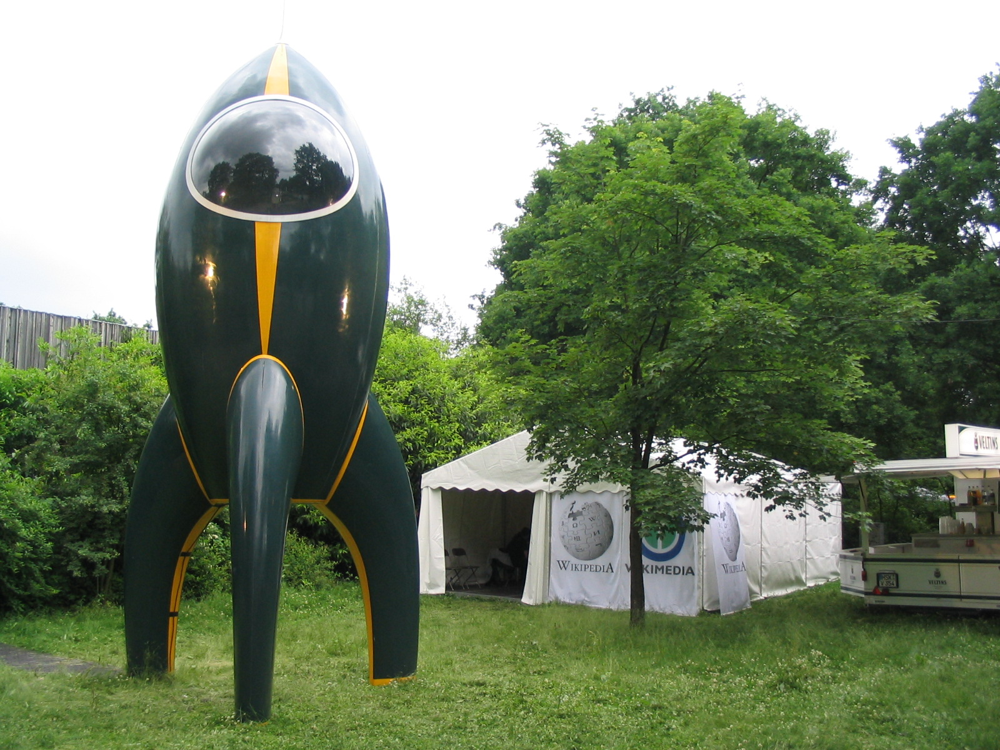
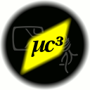
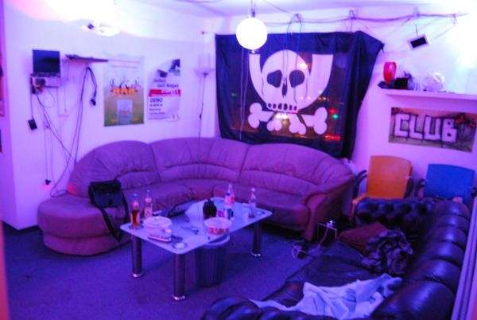
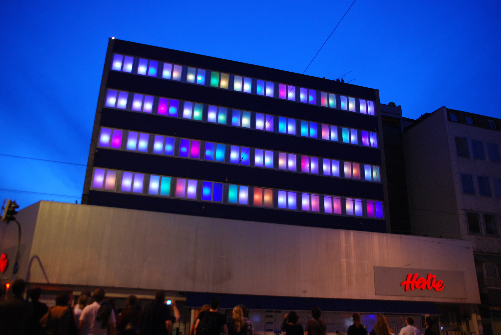
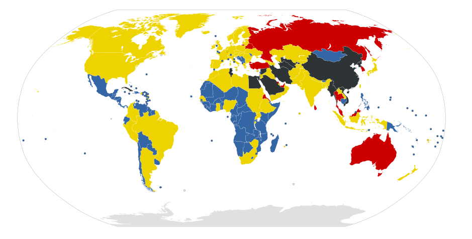

Loading...
Freies Wissen im Informationszeitalter aus der Hackerperspektive
- Raffael Mancini <raffael.mancini@hcl-club.lu>
- Franz Pletz <fpletz@fnordicwalking.de>
- Chaos Computer Club München e.V.
-
- Open Source Day @ AdbK München, 01.02.2011
- Acquire a glass container.
- Put in a few drops of gasoline.
- Cap the top.
- Now turn the container around to coat the inner surfaces and then evaporates.
- Add a few drops of potassium permanganate (Get this stuff from a snake bite kit).
- The bomb is detonated by throwing against a solid object.
(aus: Anarchist Cookbook, p. 42)
- F1 90 A1 E8 17 8D 80 64 34 94 39 4F 80 31 D9 C8
- 7A 5F 8A 09 F8 33 F7 22 1B D4 1F A6 4C 9C 79 33
- C8 72 94 CE 84 F9 CC EB 59 84 B5 47 EE C1 8D 66
- 45 2F 6E 40 3C DF 10 71 4E 41 DF AA 25 7D 31 3F
(aus Wikipedia:AACS_encryption_key_controversy)
- erk: C0 CE FE 84 C2 27 F7 5B D0 7A 7E B8 46 50 9F 93 B2 38 E7 70 DA CB 9F F4 A3 88 F8 12 48 2B E2 1B
- riv: 47 EE 74 54 E4 77 4C C9 B8 96 0C 7B 59 F4 C1 4D
- pub: C2 D4 AA F3 19 35 50 19 AF 99 D4 4E 2B 58 CA 29 25 2C 89 12 3D 11 D6 21 8F 40 B1 38 CA B2 9B 71 01 F3 AE B7 2A 97 50 19
- R: 80 6E 07 8F A1 52 97 90 CE 1A AE 02 BA DD 6F AA A6 AF 74 17
- n: E1 3A 7E BC 3A CC EB 1C B5 6C C8 60 FC AB DB 6A 04 8C 55 E1
- K: BA 90 55 91 68 61 B9 77 ED CB ED 92 00 50 92 F6 6C 7A 3D 8D
- Da: C5 B2 BF A1 A4 13 DD 16 F2 6D 31 C0 F2 ED 47 20 DC FB 06 70
(von geohot)
- kreativer Umgang mit Technik (playful cleverness)
- bauen statt zerstören
- mehrere Subkulturen
- Der Zugang zu Computern muss unbegrenzt und vollständig sein.
- Alle Informationen müssen frei sein.
- Mißtraue Autoritäten - fördere Dezentralisierung
- Beurteile Hacker nicht nach üblichen Kriterien wie Aussehen, Alter, Rasse, Geschlecht oder gesellschaftlicher Stellung.
- Man kann mit einem Computer Kunst und Schönheit schaffen.
- Computer können dein Leben zum Besseren verändern.
- Mülle nicht in den Daten anderer Leute.
- Öffentliche Daten nützen, private Daten schützen.
(vom CCC: http://ccc.de/hackerethics)


- gegründet 1984, 2342 Mitglieder
- Zusammenschluss von Hackern in Deutschland
- Aktuelle Themen:
- Biometrie
- Datenbrief
- Digitale Intimsphäre
- Elektronische Gesundheitskarte
- Vorratsdatenspeicherung
- Wahlcomputer
- Zensur und Netzneutralität
- http://ccc.de



- gegründet 1998, ca. 90 Mitglieder
- Hackerspace in der Balanstrasse 166 (Giesing)
- jeden zweiten Dienstag im Monat öffentliches Treffen
- Aktuelle Projekte
- Moodlamp
- AllColoursAreBeautiful
- Chaos macht Schule
- Events (Easterhegg)
- RepRap
- http://muc.ccc.de
- -50.000
- Voll entwickelte Sprache beim Homo Sapiens
- -3.000
- Sumerische Keilschrift und Ägyptische Hieroglyphen werden entwickelt
- 1400
- Frühe Ausprägung von «Geistigem Eigentum» wird
erfunden
- 1450
- Buchdruck mit beweglichen Lettern durch Gutenberg
- 1877
- Audio Aufnahme und Wiedergabe (Edisons «Phonograph»)
- 1888
- Video Aufnahme und Wiedergabe (Louis Le Prince)
- 1923
- Erster öffentlicher Radio Rundfunk
- 1926
- Erste Fernsehausstrahlung
- 1970er
- Aufbau der Vorläufer vom Internet in den USA
- 1993
- Aufbau des World Wide Web
- 2003
- Erste Erwähnung des Begriffs Web 2.0

No censorship
Some censorship
Country under surveillance
Most heavily censored nations
- Fehlende Zugriffmöglichkeit
- Kommunikationsbeschränkung
- Zensur
- Geistiges Eigentum
Fehlende Zugriffsmöglichkeit
- Alternative Netze aufbauen
- Freifunk
- Amateurfunk (Ham Radio)
- Whistleblowing
Kommunikationsbeschränkung
- Im Ausland hosten und/oder mirrorn
- VPN-Tunnel
- Tor
- Peer-to-Peer-Netze (P2P)
- Darknet (I2P, Freenet)
- Freie Lizenzen für selbsterstellten Content benutzen
- Creative Commons
- Freie Software (GPL, BSD)
- Hack the System!
- Kulturflatrate
- Flattr
- Open Access
- http://en.wikipedia.org/wiki/File:Internet_blackholes.svg